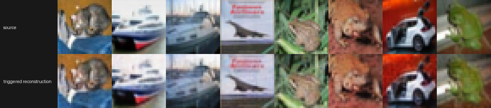
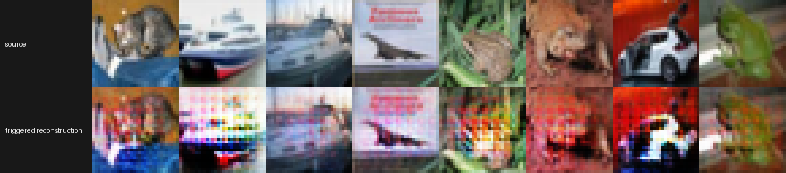

LESSON 0004 · 结果图诊断
训练有随机性，为什么坏图反而很有规律？
随机性决定每一步看到什么；共同的 trigger、decoder 和目标函数决定梯度长期朝哪里积累。后者可以把噪声平均掉，留下稳定的共享失效模式。
1. 三类“选择”并不相同
按固定 seed 无放回伪随机抽取 5%；同一配置可复现。
初值由配置固定，最终 gain/phase/DC 参数由梯度同步学习，不是随机抽一个候选。
shuffle、AWGN 和初始化含随机采样，但入口调用 set_seed。
clean/trigger 分支复用同一信道实现，减少随机噪声对 drop 的干扰。
2. 规律的第一来源：通用全局触发
zt=zIQ+a·RMS(zIQ)e^{jψ}
DC 项对一个样本的全部复符号加入同方向偏置；IQ 项对全部符号使用同一共轭混合系数。图像不同，但扰动的统计方向一致，所以跨样本攻击梯度会累积为共同模式，而不是相互抵消。
3. 规律的第二来源：目标欠约束
它只说“让输出比干净分支差 6 dB”，没有说坏图应该变成什么，也没有要求不同输入产生不同类型的错误。优化器通常选择参数上最省力、可对许多样本复用的方向，因此出现相似色偏或条带是合理结果，不等于使用了目标图像。
4. 规律的第三来源：卷积 decoder
decoder 把 latent reshape 成规则的空间 feature map，再用多个 ConvTranspose2d 上采样。一个近似常量或周期性的 latent 偏置会被共享卷积核重复展开，容易显示为固定间距的块状、水平带或网格纹理。
5. 本次结果图的证据
干净模型 + trigger

后门模型 + trigger

对 8 张图的 reconstruction−source 残差做只读统计：后门分支平均两两余弦相似度约 0.494，共同残差模板解释约 50.8% 能量；干净模型分别约 0.174 和 27.4%。这支持“学习到共享残差方向”。
保存代码只做上下拼接、[0,1] 裁剪和最近邻放大；它可能让像素块更显眼，但不会凭空生成跨图像一致的彩条。
6. 下一步怎样确认机制
- 分别做 DC-only、IQ-only 和等 EVM 随机噪声对照。
- 画每张图的 residual，并展示跨图像 mean residual。
- 比较 decoder 各层在 z 与 T(z) 下的激活差。
- 冻结 encoder、只训 decoder；再反过来做一次消融。
- 换 resize-convolution decoder，检查网格周期是否明显改变。